Germany · Tier IV
All nations and tiers · EU v20410 → RU v14600ru · 3 November 2026
Durchbruchswagen 2 · Tier IV
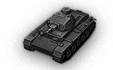
Armor & health
Health EU 670  RU 730
RU 730
Track repair time (s) EU 12.03 RU 5
Jagdpanzer 38(t) Hetzer · Tier IV
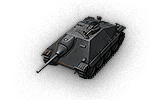
Firepower
DPM (HP/min) EU 2 235 RU 2 546.86
Rate of fire (rounds/min) EU 6.39 RU 7.28
Reload time (s) EU 9.40 RU 8.25
Gun handling
Aim time (s) EU 2.21 RU 1.63
Armor & health
Health EU 415 RU 550
Track repair time (s) EU 10.03 RU 5
Miscellaneous
View range (m) EU 260 RU 300
Marder 38T · Tier IV
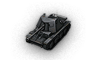
Gun handling
Dispersion · moving EU 0.28 RU 0.25
Dispersion · tank traverse EU 0.28 RU 0.25
Armor & health
Health EU 415 RU 550
Track repair time (s) EU 10.03 RU 5
Pz.Kpfw. 38 (t) n.A. · Tier IV
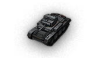
Armor & health
Track repair time (s) EU 12.03 RU 5
Pz.Kpfw. B2 740 (f) · Tier IV
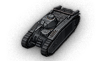
Firepower
DPM (HP/min) EU 1 436.84 RU 1 437.79
Rate of fire (rounds/min) EU 27.63 RU 27.65
Gun handling
Aim time (s) EU 1.14 RU 1.10
Dispersion (m/100 m) EU 0.39 RU 0.36
Dispersion · damaged EU 0.78 RU 0.72
Dispersion · turret traverse EU 0.06  RU 0.10
RU 0.10
Dispersion · firing EU 2.50 RU 2
Armor & health
Health EU 610 RU 720
Track repair time (s) EU 12.03 RU 5
Pz.Kpfw. II Luchs · Tier IV
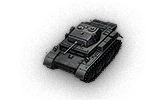
Gun handling
Dispersion (m/100 m) EU 0.50 RU 0.45
Dispersion · damaged EU 1 RU 0.90
Dispersion · firing EU 3 RU 1.60
Mobility
Forward speed on soft terrain (km/h) EU 51.23 RU 48.74
Engine power (hp) EU 400 RU 380.62
Power/weight (hp/t) EU 30.96 RU 29.46
Tank traverse on hard terrain (°/s) EU 34.13 RU 60.08
Tank traverse on medium terrain (°/s) EU 31.28 RU 55.07
Tank traverse on soft terrain (°/s) EU 16.32 RU 28.73
Armor & health
Health · engine EU 135 RU 80
Track repair time (s) EU 10.03 RU 5
Pz.Kpfw. III Ausf. J · Tier IV
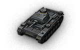
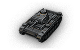
Penetration (mm)
EU  AP 96 /
AP 96 /  APCR 130 /
APCR 130 /  HE 25 → RU
HE 25 → RU  AP 83 /
AP 83 /  HEAT 117 /
HEAT 117 /  HE 38
HE 38
Damage (HP)
EU  AP 70 /
AP 70 /  APCR 70 /
APCR 70 /  HE 90 → RU
HE 90 → RU  AP 110 /
AP 110 /  HEAT 110 /
HEAT 110 /  HE 175
HE 175
Firepower
DPM (HP/min) EU 1 991.18 RU 1 678.98
Module damage EU 68 RU 100
Rate of fire (rounds/min) EU 28.45 RU 15.26
Reload time (s) EU 2.11 RU 3.93
Caliber EU 50 RU 75
Shell velocity (m/s) EU 835 RU 385
Ammo capacity EU 140 RU 125
Potential damage EU 9 800 RU 13 750
Gun handling
Aim time (s) EU 2.01 RU 1.92
Dispersion (m/100 m) EU 0.35 RU 0.40
Dispersion · damaged EU 0.69 RU 0.81
Dispersion · turret traverse EU 0.12 RU 0.10
Dispersion · firing EU 3.50 RU 2
Mobility
Forward speed on soft terrain (km/h) EU 57.64 RU 52.36
Engine power (hp) EU 510 RU 465.20
Weight (kg) EU 19 810 → RU 19 890
Power/weight (hp/t) EU 25.74 RU 23.39
Turret traverse (°/s) EU 45.89 RU 47.98
Tank traverse (°/s) EU 66.75 RU 46.93
Tank traverse on hard terrain (°/s) EU 68.78 RU 55.80
Tank traverse on medium terrain (°/s) EU 62.52 RU 50.73
Tank traverse on soft terrain (°/s) EU 40.46 RU 32.82
Armor & health
Health EU 570 RU 640
Health · engine EU 135 RU 86
Track repair time (s) EU 10.03 RU 5
Miscellaneous
Stationary camo · after firing EU 4.51 RU 4.25
Moving camo · after firing EU 3.39 RU 3.19
View range (m) EU 340 RU 330
Pz.Kpfw. IV Ausf. D · Tier IV
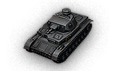
Gun handling
Aim time (s) EU 2.40 RU 1.82
Dispersion (m/100 m) EU 0.38 RU 0.36
Dispersion · damaged EU 0.77 RU 0.73
Dispersion · moving EU 0.29 RU 0.20
Dispersion · tank traverse EU 0.29 RU 0.20
Armor & health
Health EU 540 RU 630
Track repair time (s) EU 10.03 RU 5
Pz.Sfl. IC · Tier IV
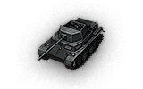
Firepower
DPM (HP/min) EU 927.31 RU 1 079.67
Rate of fire (rounds/min) EU 13.25 RU 15.42
Reload time (s) EU 9.59 RU 7.67
Gun handling
Aim time (s) EU 2 RU 1.80
Dispersion · moving EU 0.28 RU 0.22
Dispersion · tank traverse EU 0.28 RU 0.22
Dispersion · firing EU 3 RU 2
Mobility
Turret traverse (°/s) EU 28 RU 34
Armor & health
Health EU 415 RU 550
Track repair time (s) EU 10.03 RU 5
Pz.Sfl. IVb · Tier IV
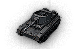
Armor & health
Health EU 305 RU 320
Track repair time (s) EU 12.96 RU 5
Miscellaneous
View range (m) EU 255 RU 300
StuG III Ausf. B · Tier IV
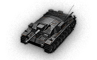
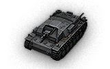
Penetration (mm)
EU  HEAT 92 /
HEAT 92 /  HEAT 104 /
HEAT 104 /  HE 53 → RU
HE 53 → RU  AP 64 /
AP 64 /  HEAT 104 /
HEAT 104 /  HE 53
HE 53
Damage (HP)
EU  HEAT 350 /
HEAT 350 /  HEAT 350 /
HEAT 350 /  HE 410 → RU
HE 410 → RU  AP 350 /
AP 350 /  HEAT 350 /
HEAT 350 /  HE 410
HE 410
Firepower
Shell velocity (m/s) EU 376 RU 470
Normalization EU 0 RU 5
Ricochet angle EU 85 RU 70
Spaced armor pen loss EU 0.50 RU 0
Mobility
Forward speed on soft terrain (km/h) EU 31.31 RU 30.34
Reverse speed (km/h) EU 14 RU 10
Engine power (hp) EU 480 RU 465.20
Power/weight (hp/t) EU 20.57 RU 19.93
Tank traverse on hard terrain (°/s) EU 44.01 RU 48.41
Tank traverse on medium terrain (°/s) EU 32.27 RU 35.50
Tank traverse on soft terrain (°/s) EU 19.36 RU 21.30
Armor & health
Health EU 400 RU 550
Health · engine EU 135 RU 86
Health · track EU 95 RU 100
Track repair time (s) EU 11.82 RU 5
Miscellaneous
Shell cost EU 190 RU 120
Sturmpanzer II · Tier IV
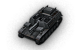
Penetration (mm)
EU  HE 35 /
HE 35 /  HE 44 /
HE 44 /  HEAT 98 → RU
HEAT 98 → RU  HE 38 /
HE 38 /  HEAT 98
HEAT 98
Damage (HP)
EU  HE 350 /
HE 350 /  HE 450 /
HE 450 /  HEAT 300 → RU
HEAT 300 → RU  HE 500 /
HE 500 /  HEAT 300
HEAT 300
Firepower
DPM (HP/min) EU 1 258.79 RU 1 798.28
Explosion radius EU 6.20 RU 4.70
Stun duration · maximum (s) EU 6.60 → RU —
Stun duration · minimum (s) EU 3.96 → RU —
Shell velocity (m/s) EU 275 RU 294
Max range (m) EU 605 RU 1 329.78
Potential damage EU 19 250 RU 27 500
Gun handling
Aim time (s) EU 6.23 RU 5.94
Dispersion (m/100 m) EU 0.81 RU 0.77
Dispersion · damaged EU 1.61 RU 1.53
Armor & health
Health EU 290 RU 300
Track repair time (s) EU 13.40 RU 5
Miscellaneous
View range (m) EU 255 RU 300
Shell cost EU 280 RU 310
VK 20.01 (D) · Tier IV
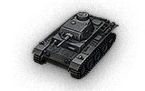
Penetration (mm)
EU  AP 43 /
AP 43 /  HEAT 87 /
HEAT 87 /  HE 38 → RU
HE 38 → RU  AP 83 /
AP 83 /  HEAT 117 /
HEAT 117 /  HE 38
HE 38
Firepower
DPM (HP/min) EU 1 600.88 RU 1 678.98
Rate of fire (rounds/min) EU 14.55 RU 15.26
Reload time (s) EU 4.12 RU 3.93
Gun handling
Aim time (s) EU 2.21 RU 2.01
Dispersion (m/100 m) EU 0.53 RU 0.40
Dispersion · damaged EU 1.05 RU 0.81
Dispersion · turret traverse EU 0.16 RU 0.12
Armor & health
Health EU 540 RU 640
Track repair time (s) EU 10.03 RU 5